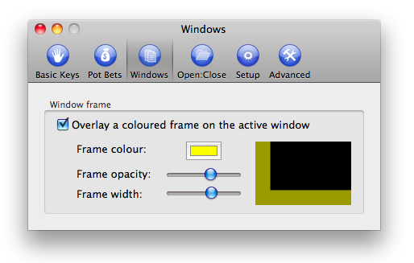

Setting up a window overlay.
Determining which window is currently active can be difficult when you have many windows open, so to help you BlazingStars can place a colored border (an "overlay") around the window which is currently active. On the Windows set up screen, you can change the opacity of the overlay, as well as the color and the thickness.
